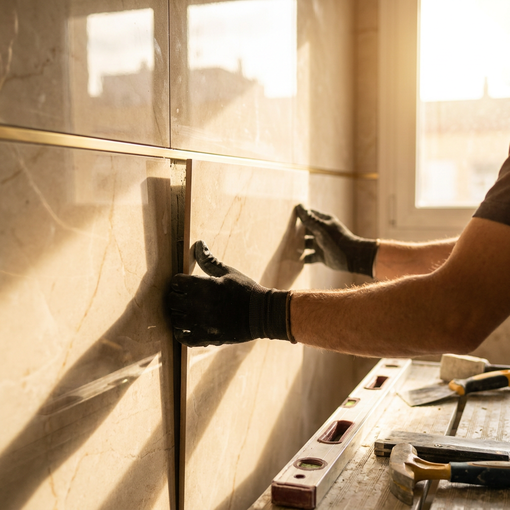

Czy Ty też masz czasami dość wiecznego pośpiechu, mroźnych, szarych poranków i ciągłego stresu o jutro w Polsce?
Czy czujesz, że Twój wysiłek, rzetelność i prawdziwy fach w ręku zasługują na coś więcej niż użeranie się z niepewnym rynkiem i systemem?
A co, gdybyś mógł zamienić ten zimny, przytłaczający klimat na spokojną, dobrze płatną pracę w ciepłym słońcu, otoczony malowniczymi górami i szumem śródziemnomorskich fal?
Poczuj głęboką ulgę, oddychając rześkim, morskim powietrzem po dobrze przepracowanym dniu. Zobacz czarno na białym, jak stabilne zarobki (do 1200 zł dziennie na czysto), darmowe komfortowe zakwaterowanie blisko plaży oraz profesjonalna ekipa bez nałogów zdejmują z Twoich barków dotychczasowy ciężar. Jeśli w Polsce nic Cię już nie trzyma – czas złapać upragniony oddech i żyć tak, jak na to zasługujesz.
Zobacz, usłysz i poczuj, jak może wyglądać Twoja nowa codzienność.
Pracujesz w Gandii – urokliwej hiszpańskiej miejscowości otoczonej morzem, lasami i górami. Poczujesz ciepłe hiszpańskie słońce i głęboką ulgę od stresu.
Zarobki od ręki, wypłacane regularnie. W zależności od Twojego tempa i precyzji pracy, możesz zarobić nawet 1200 zł dziennie na czysto.
Zapewniamy luksusowe zakwaterowanie w hiszpańskich nieruchomościach oraz pełny komplet profesjonalnych narzędzi. Ty dajesz tylko chęć i energię do pracy.
To nie jest jednorazowy wyjazd. Mamy stały dopływ zleceń w prywatnych kamienicach i apartamentach. Praca w trybie ciągłym przez cały rok.
Pracujemy u prywatnych klientów w wysokiej klasy kamienicach. Dlatego nasz standard to bezwzględna sumienność, wysoka kultura osobista oraz całkowity brak problemów z alkoholem lub innymi nałogami.
Jeśli lubisz pracę w doskonałym klimacie, jesteś osobą stanu wolnego (lub nic Cię nie trzyma w kraju) i szukasz stabilnej, bezpiecznej przystani finansowej – ta oferta ma głęboki sens.

Masz pytania? Tutaj znajdziesz natychmiastowe odpowiedzi.
Nie. Cała nasza ekipa oraz koordynator na miejscu (Jurek) to Polacy. Wszystkie sprawy organizacyjne i techniczne załatwiamy w języku polskim.
Mieszkanie jest w 100% darmowe. Zapewniamy zakwaterowanie w hiszpańskich apartamentach o wysokim standardzie, w pełni wyposażonych.
Rozliczamy się regularnie, tygodniowo lub miesięcznie, bezpośrednio na konto. Stawka zależy od Twojej sprawności i precyzji pracy – rzetelni glazurnicy zarabiają u nas nawet do 1200 zł dziennie.
Nie, zapewniamy pełny komplet profesjonalnych elektronarzędzi i sprzętu na miejscu. Zabierasz tylko swoje ubrania robocze i chęć do pracy.
Nie zwlekaj. Liczba miejsc w zespole jest ograniczona. Kliknij poniżej, aby uruchomić Bota HR i przejść 2-minutową kwalifikację.